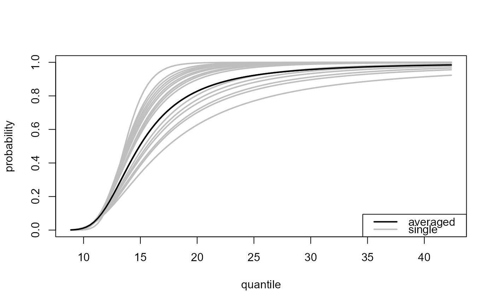
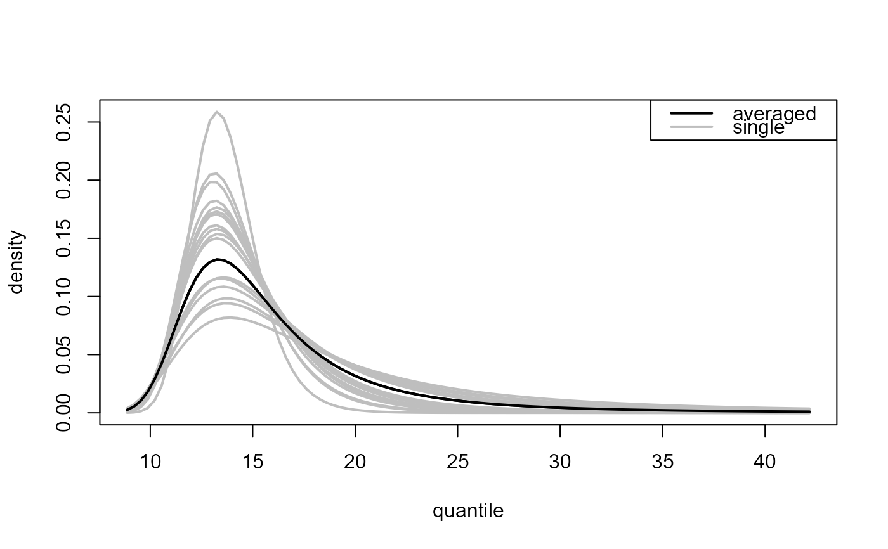
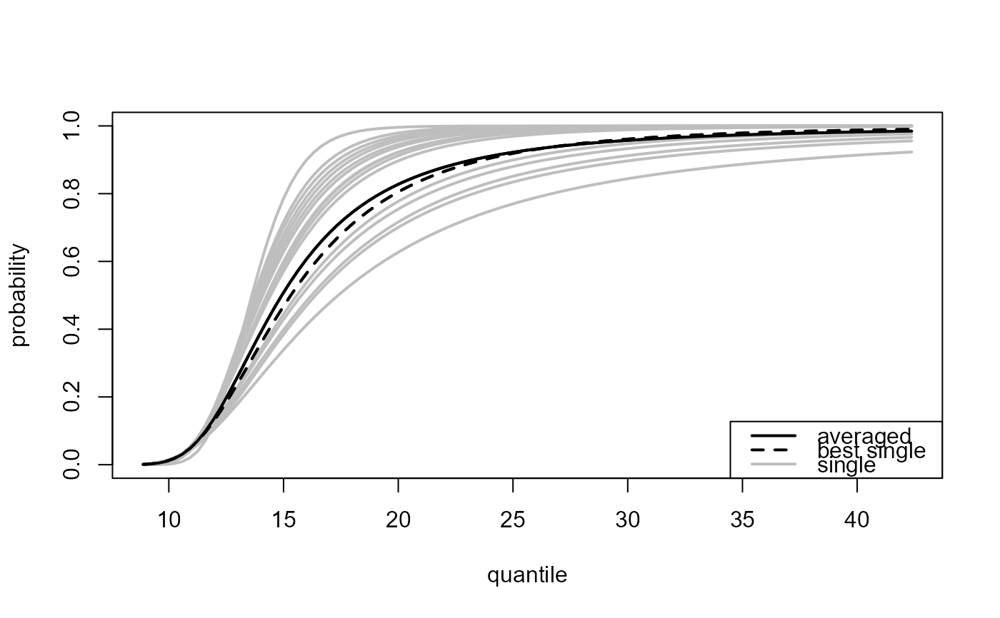
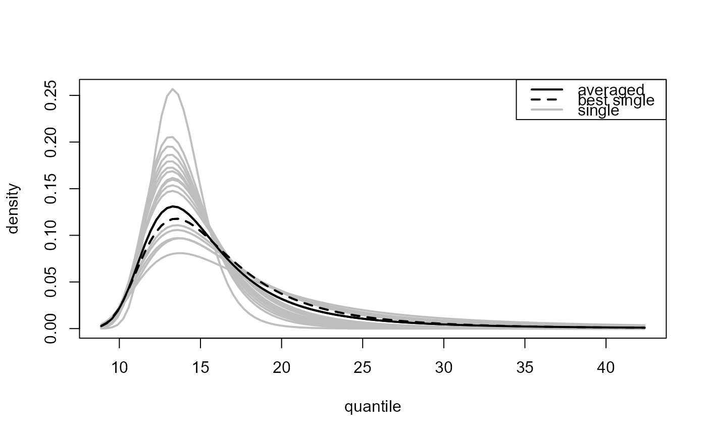

plot method for class "ithreshpred". Produces plots to
summarise the predictive inferences made by predict.ithresh.
# S3 method for ithreshpred plot(x, ..., ave_only = FALSE, add_best = FALSE)
| x | an object of class "ithreshpred", a result of a call to
|
|---|---|
| ... | Additional arguments passed on to
|
| ave_only | A logical scalar. Only relevant if
|
| add_best | A logical scalar. If |
A list containing the graphical parameters using in producing the plot including any arguments supplied via ... is returned (invisibly).
Single threshold case, where
predict.ithresh was called with numeric scalar
which_u or which_u = "best".
plot.evpred is called to produce the plot.
Multiple threshold case, where
predict.ithresh was called with which_u = "all".
Again, plot.evpred is called but now the
estimated predictive distribution function (type = "p" used
in the call to predict.ithresh) or density function
(type = "d") is plotted for each of the training thresholds
(grey lines) as is the result of the weighted average over the
different training thresholds (black line).
If graphical parameters, such as lty, lwd or col
are passed via ... then the first element relates to the
weighted average and the remaining length(x$u_vec) elements to
the respective training thresholds in u_vec.
ithresh for threshold selection in the i.i.d. case
based on leave-one-out cross-validation.
predict.ithresh for predictive inference for the
largest value observed in N years.
plot.ithresh for the S3 plot method for objects of
class ithresh.
summary.ithresh Summarizing measures of threshold
predictive performance.
u_vec_gom <- quantile(gom, probs = seq(0, 0.9, by = 0.05)) gom_cv <- ithresh(data = gom, u_vec = u_vec_gom, n_v = 3) # Note: gom_cv$npy contains the correct value of npy (it was set in the # call to ithresh, via attr(gom, "npy"). # If object$npy doesn't exist then the argument npy must be supplied # in the call to predict(). ### Best training threshold based on the lowest validation threshold # Predictive distribution function npy_gom <- length(gom)/105 best_p <- predict(gom_cv, n_years = c(100, 1000)) plot(best_p)# Predictive density function best_d <- predict(gom_cv, type = "d", n_years = c(100, 1000)) plot(best_d)### All thresholds plus weighted average of inferences over all thresholds # Predictive distribution function all_p <- predict(gom_cv, which_u = "all") plot(all_p)